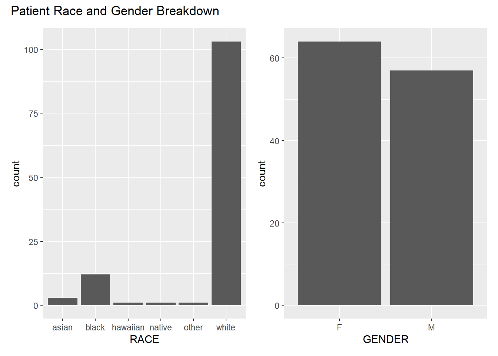
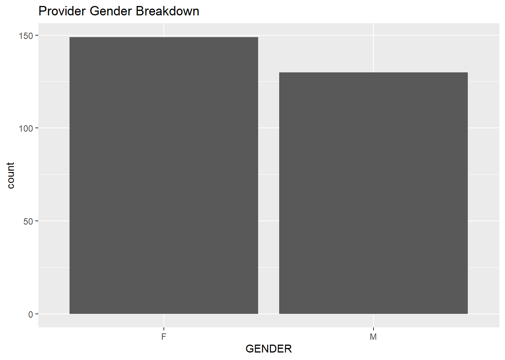
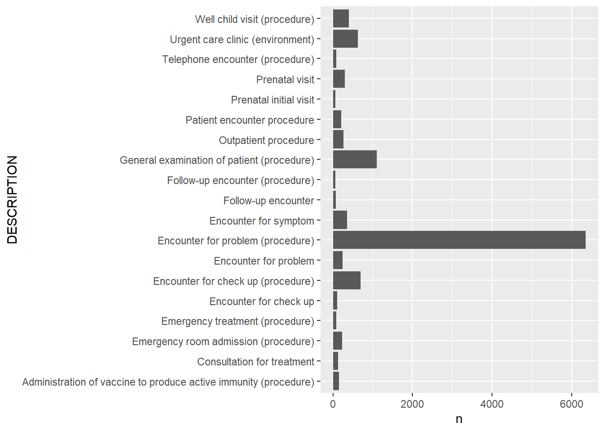
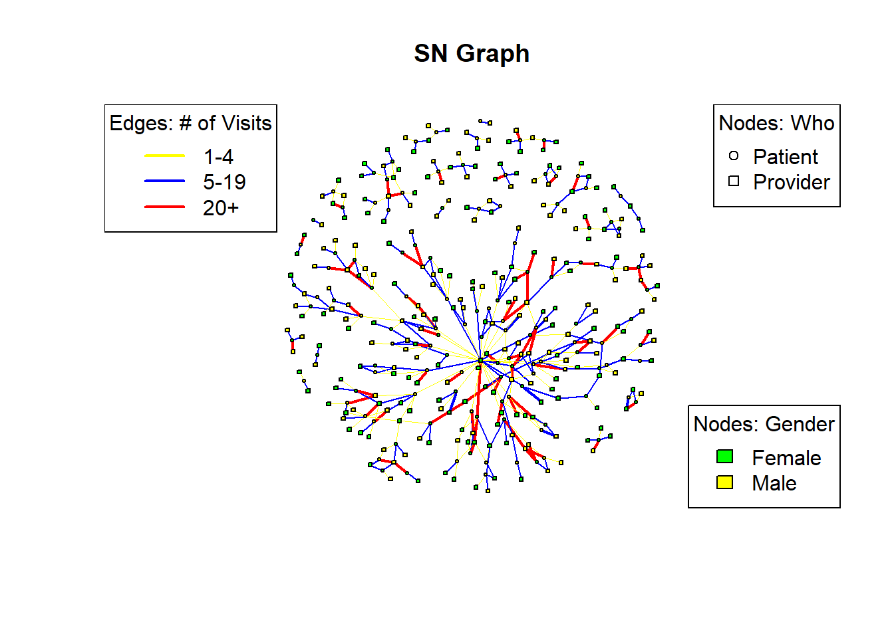

library(tidyverse)
library(readr)
library(igraph)
library(sna)
library(statnet)
library(ggplot2)
library(patchwork)Tasks - rename the attribute dimensions for - Marital Status, Gender - fix the age code (need to subtract from DEATHDATE if one exists first) - age might be a better attribute to just add to the encounter data and create a column for AGE_AT_TIME_OF_ENCOUNTER - add titles to graphs - blocking - maybe different graph for income
Data for this project were taken from Synthetic Mass, which creates Synthetic patient data from Synthea.
While a whole host of datasets are available within each download, I will focus this project on three datasets: patients.csv, providers.csv, and encounters.csv.
Patients and Providers will be the actors analyzed. The patient and provider datasets contain information on the person level details, with names and some demographic information, with more detail available for patients than providers.
Encounters will be the relationships analyzed. Encounters are appointments, visits, and clinical encounters and include notes on the visit including the date, reason, and cost breakdown.
- Reminder none of this data is real, it is synthetic, so to personally identifiable information I share is not data on real people and cannot be used to identify real people.
This post will primarily focus on data cleaning and data exploration with some exploration into social network analysis through transforming the data into an incidence matrix and plotting some attributes.
Read in Patient, Provider, and Encounter Data
PATIENT DATA
The following table is the data available in the patient dataset.
patients <- read_csv("synthea_sample_data_csv_latest/patients.csv") %>%
rename(PATIENT = Id) %>%
unite(NAME, FIRST, LAST, sep = " ")Rows: 121 Columns: 27
── Column specification ────────────────────────────────────────────────────────
Delimiter: ","
chr (19): Id, SSN, DRIVERS, PASSPORT, PREFIX, FIRST, LAST, SUFFIX, MAIDEN, ...
dbl (6): FIPS, LAT, LON, HEALTHCARE_EXPENSES, HEALTHCARE_COVERAGE, INCOME
date (2): BIRTHDATE, DEATHDATE
ℹ Use `spec()` to retrieve the full column specification for this data.
ℹ Specify the column types or set `show_col_types = FALSE` to quiet this message.head(patients)# A tibble: 6 × 26
PATIENT BIRTHDATE DEATHDATE SSN DRIVERS PASSPORT PREFIX NAME SUFFIX
<chr> <date> <date> <chr> <chr> <chr> <chr> <chr> <chr>
1 b573d409-cfa… 1988-02-12 2004-12-30 999-… S99986… <NA> <NA> Avri… <NA>
2 2703570e-f63… 1999-03-13 NA 999-… S99998… X640979… Ms. Norm… <NA>
3 35589a76-2a9… 2003-02-05 NA 999-… S99996… X735788… Ms. Pegg… <NA>
4 d46186a3-507… 1986-11-07 NA 999-… S99939… X782935… Mrs. Ashl… <NA>
5 983105f7-6f2… 1999-05-21 NA 999-… S99973… X519829… Ms. Chri… <NA>
6 54ac079a-90a… 1988-02-12 NA 999-… S99995… X507824… Mrs. Dion… <NA>
# ℹ 17 more variables: MAIDEN <chr>, MARITAL <chr>, RACE <chr>,
# ETHNICITY <chr>, GENDER <chr>, BIRTHPLACE <chr>, ADDRESS <chr>, CITY <chr>,
# STATE <chr>, COUNTY <chr>, FIPS <dbl>, ZIP <chr>, LAT <dbl>, LON <dbl>,
# HEALTHCARE_EXPENSES <dbl>, HEALTHCARE_COVERAGE <dbl>, INCOME <dbl>str(patients)tibble [121 × 26] (S3: tbl_df/tbl/data.frame)
$ PATIENT : chr [1:121] "b573d409-cfaf-c585-a25b-e9d4cf510bd3" "2703570e-f634-d4cc-13db-2ae14e19ae59" "35589a76-2a97-0a89-8c2d-56defc8627af" "d46186a3-507c-0b22-1bfc-1f88bd7cbd7d" ...
$ BIRTHDATE : Date[1:121], format: "1988-02-12" "1999-03-13" ...
$ DEATHDATE : Date[1:121], format: "2004-12-30" NA ...
$ SSN : chr [1:121] "999-97-2089" "999-76-8207" "999-64-2625" "999-67-4853" ...
$ DRIVERS : chr [1:121] "S99986968" "S99998444" "S99996738" "S99939817" ...
$ PASSPORT : chr [1:121] NA "X64097979X" "X7357887X" "X78293510X" ...
$ PREFIX : chr [1:121] NA "Ms." "Ms." "Mrs." ...
$ NAME : chr [1:121] "Avril120 Olson653" "Norma469 Langosh790" "Peggie783 Eichmann909" "Ashlie138 Williamson769" ...
$ SUFFIX : chr [1:121] NA NA NA NA ...
$ MAIDEN : chr [1:121] NA NA NA "Cummerata161" ...
$ MARITAL : chr [1:121] NA NA NA "M" ...
$ RACE : chr [1:121] "white" "white" "white" "white" ...
$ ETHNICITY : chr [1:121] "nonhispanic" "nonhispanic" "nonhispanic" "nonhispanic" ...
$ GENDER : chr [1:121] "F" "F" "F" "F" ...
$ BIRTHPLACE : chr [1:121] "Quincy Massachusetts US" "Somerville Massachusetts US" "Pittsfield Massachusetts US" "Salem Massachusetts US" ...
$ ADDRESS : chr [1:121] "590 Kuhic Frontage road" "525 Gleason Burg Suite 75" "230 Ratke Neck Suite 55" "355 Eichmann Underpass" ...
$ CITY : chr [1:121] "Newton" "Bridgewater" "Walpole" "Lexington" ...
$ STATE : chr [1:121] "Massachusetts" "Massachusetts" "Massachusetts" "Massachusetts" ...
$ COUNTY : chr [1:121] "Middlesex County" "Plymouth County" "Norfolk County" "Middlesex County" ...
$ FIPS : num [1:121] 25017 25023 25021 25017 25017 ...
$ ZIP : chr [1:121] "02461" "02324" "02081" "02421" ...
$ LAT : num [1:121] 42.4 42 42.1 42.4 42.3 ...
$ LON : num [1:121] -71.2 -71 -71.2 -71.2 -71.5 ...
$ HEALTHCARE_EXPENSES: num [1:121] 31150 50725 65580 162538 141345 ...
$ HEALTHCARE_COVERAGE: num [1:121] 129135 100008 32578 809077 282706 ...
$ INCOME : num [1:121] 482269 190464 78997 6472 141475 ...summary(patients) PATIENT BIRTHDATE DEATHDATE
Length:121 Min. :1915-06-30 Min. :1974-12-14
Class :character 1st Qu.:1959-04-12 1st Qu.:2004-04-13
Mode :character Median :1983-05-26 Median :2010-05-15
Mean :1979-08-14 Mean :2008-12-31
3rd Qu.:1999-09-28 3rd Qu.:2019-12-16
Max. :2022-08-22 Max. :2023-10-05
NA's :100
SSN DRIVERS PASSPORT PREFIX
Length:121 Length:121 Length:121 Length:121
Class :character Class :character Class :character Class :character
Mode :character Mode :character Mode :character Mode :character
NAME SUFFIX MAIDEN MARITAL
Length:121 Length:121 Length:121 Length:121
Class :character Class :character Class :character Class :character
Mode :character Mode :character Mode :character Mode :character
RACE ETHNICITY GENDER BIRTHPLACE
Length:121 Length:121 Length:121 Length:121
Class :character Class :character Class :character Class :character
Mode :character Mode :character Mode :character Mode :character
ADDRESS CITY STATE COUNTY
Length:121 Length:121 Length:121 Length:121
Class :character Class :character Class :character Class :character
Mode :character Mode :character Mode :character Mode :character
FIPS ZIP LAT LON
Min. :25001 Length:121 Min. :41.56 Min. :-73.26
1st Qu.:25014 Class :character 1st Qu.:42.15 1st Qu.:-71.51
Median :25017 Mode :character Median :42.28 Median :-71.13
Mean :25018 Mean :42.24 Mean :-71.27
3rd Qu.:25025 3rd Qu.:42.40 3rd Qu.:-71.01
Max. :25027 Max. :42.77 Max. :-70.12
NA's :19
HEALTHCARE_EXPENSES HEALTHCARE_COVERAGE INCOME
Min. : 500 Min. : 0 Min. : 3365
1st Qu.: 21279 1st Qu.: 23029 1st Qu.: 32577
Median : 65580 Median : 165466 Median : 71082
Mean : 166163 Mean : 409297 Mean :134519
3rd Qu.: 221068 3rd Qu.: 679128 3rd Qu.:135462
Max. :1547205 Max. :1955909 Max. :931642
I am only keeping the demographic data below (gender, race, marital status, income, and age) which will be used as an attribute for each patient.
#Create AGE from BIRTHDATE
patients <- patients %>%
mutate(
BIRTHDATE = as.Date(BIRTHDATE), # Ensure 'dob' is in Date format
AGE = interval(BIRTHDATE, today()) / years(1) # Calculate age in years
) %>%
mutate(
AGE = floor(AGE) # complete years only, removing decimal
)
# Only keep patient name and demographics. This will be utilized as the attribute data for analysis.
pat_attr <- patients%>%
select(NAME, GENDER, RACE, MARITAL, INCOME, AGE)
head(pat_attr)# A tibble: 6 × 6
NAME GENDER RACE MARITAL INCOME AGE
<chr> <chr> <chr> <chr> <dbl> <dbl>
1 Avril120 Olson653 F white <NA> 482269 36
2 Norma469 Langosh790 F white <NA> 190464 25
3 Peggie783 Eichmann909 F white <NA> 78997 21
4 Ashlie138 Williamson769 F white M 6472 37
5 Christiane220 Ankunding277 F white <NA> 141475 24
6 Dione665 O'Kon634 F white M 482269 36pat_race <- ggplot(pat_attr,aes(RACE)) + geom_bar()
pat_gender <- ggplot(pat_attr,aes(GENDER)) + geom_bar()
pat_race + pat_gender + plot_annotation(title = "Patient Race and Gender Breakdown")
ggplot(pat_attr,aes(MARITAL)) + geom_bar() + labs(title = "Patient Marital Status")
pat_income <- ggplot(pat_attr, aes(x = 1, y = INCOME)) +
geom_jitter(width = 0.2) +
labs(x = NULL, y = "Income") +
theme_minimal() + labs(title = "Patient Income")
summary(pat_attr$INCOME) Min. 1st Qu. Median Mean 3rd Qu. Max.
3365 32577 71082 134519 135462 931642 pat_age <- ggplot(pat_attr,aes(AGE)) + geom_bar()Key for marital status: M (married), S (single), D (divorced), W (widowed) (There is missing data here)
PROVIDER DATA
The following table is the data available in the provider dataset.
providers <- read_csv("synthea_sample_data_csv_latest/providers.csv") %>%
rename(PROVIDER = Id)Rows: 279 Columns: 13
── Column specification ────────────────────────────────────────────────────────
Delimiter: ","
chr (9): Id, ORGANIZATION, NAME, GENDER, SPECIALITY, ADDRESS, CITY, STATE, ZIP
dbl (4): LAT, LON, ENCOUNTERS, PROCEDURES
ℹ Use `spec()` to retrieve the full column specification for this data.
ℹ Specify the column types or set `show_col_types = FALSE` to quiet this message.head(providers)# A tibble: 6 × 13
PROVIDER ORGANIZATION NAME GENDER SPECIALITY ADDRESS CITY STATE ZIP LAT
<chr> <chr> <chr> <chr> <chr> <chr> <chr> <chr> <chr> <dbl>
1 586477e1… 74ab949d-17… Ted9… M GENERAL P… 881 Ma… Fitc… MA 01420 42.6
2 4b284e0c… e09d4c49-c2… Barb… F GENERAL P… 60 HOS… LEOM… MA 0145… 42.5
3 88668b3f… e76b5eb0-0c… Gise… F GENERAL P… 1400 V… West… MA 02132 42.3
4 21a7f0e9… 77645e49-3f… Vell… F GENERAL P… 363 HI… FALL… MA 0272… 41.7
5 49671606… aa682136-a4… Prec… F GENERAL P… 501 CO… NORW… MA 0206… 42.2
6 bcc6badc… d2284f74-b6… Fern… F GENERAL P… 331 E … E FA… MA 0253… 41.6
# ℹ 3 more variables: LON <dbl>, ENCOUNTERS <dbl>, PROCEDURES <dbl>I am only keeping the demographic data below (gender) which will be used as an attribute for each provider.
# Only keep provider name and demographics. This will be utilized as the attribute data for analysis. The only demographic data available for Providers is gender.
pro_attr <- providers %>%
select(NAME, GENDER)
head(pro_attr)# A tibble: 6 × 2
NAME GENDER
<chr> <chr>
1 Ted955 Reilly981 M
2 Barbara209 Maldonado119 F
3 Gisele901 Lehner980 F
4 Vella930 Ankunding277 F
5 Precious140 Runolfsson901 F
6 Fernande593 Mosciski958 F ggplot(pro_attr, aes(GENDER)) +geom_bar() + labs(title = "Provider Gender Breakdown")
PATIENT AND PROVIDER
#combine pro and pat attr
pat_attr$type <- "PATIENT"
pro_attr$type <- "PROVIDER"
both_attr <- bind_rows(pat_attr, pro_attr)
head(both_attr)# A tibble: 6 × 7
NAME GENDER RACE MARITAL INCOME AGE type
<chr> <chr> <chr> <chr> <dbl> <dbl> <chr>
1 Avril120 Olson653 F white <NA> 482269 36 PATIENT
2 Norma469 Langosh790 F white <NA> 190464 25 PATIENT
3 Peggie783 Eichmann909 F white <NA> 78997 21 PATIENT
4 Ashlie138 Williamson769 F white M 6472 37 PATIENT
5 Christiane220 Ankunding277 F white <NA> 141475 24 PATIENT
6 Dione665 O'Kon634 F white M 482269 36 PATIENTENCOUNTER DATA
encounters <- read_csv("synthea_sample_data_csv_latest/encounters.csv")Rows: 11987 Columns: 15
── Column specification ────────────────────────────────────────────────────────
Delimiter: ","
chr (8): Id, PATIENT, ORGANIZATION, PROVIDER, PAYER, ENCOUNTERCLASS, DESCRI...
dbl (5): CODE, BASE_ENCOUNTER_COST, TOTAL_CLAIM_COST, PAYER_COVERAGE, REASO...
dttm (2): START, STOP
ℹ Use `spec()` to retrieve the full column specification for this data.
ℹ Specify the column types or set `show_col_types = FALSE` to quiet this message.head(encounters)# A tibble: 6 × 15
Id START STOP PATIENT ORGANIZATION PROVIDER
<chr> <dttm> <dttm> <chr> <chr> <chr>
1 4afc6ab… 2013-11-02 00:34:37 2013-11-02 00:49:37 270357… 51370692-62… c0cc76b…
2 c502ee2… 2014-11-01 12:48:31 2014-11-01 13:03:31 35589a… 57e4e5fa-d6… 896d5c7…
3 6f3ad10… 1995-02-03 08:38:10 1995-02-03 08:53:10 b573d4… 67d2f85b-dd… 4087a49…
4 0d9b475… 2015-02-25 16:48:31 2015-02-25 17:17:55 35589a… ca62a361-9c… 370ff56…
5 ec0d6c6… 2013-11-09 00:34:37 2013-11-09 00:49:37 270357… 51370692-62… c0cc76b…
6 ec41ff9… 2014-03-16 11:34:37 2014-03-16 11:49:37 270357… 51370692-62… c0cc76b…
# ℹ 9 more variables: PAYER <chr>, ENCOUNTERCLASS <chr>, CODE <dbl>,
# DESCRIPTION <chr>, BASE_ENCOUNTER_COST <dbl>, TOTAL_CLAIM_COST <dbl>,
# PAYER_COVERAGE <dbl>, REASONCODE <dbl>, REASONDESCRIPTION <chr>ggplot(encounters, aes(ENCOUNTERCLASS)) + geom_bar() + coord_flip()
ggplot(data = encounters %>%
count(DESCRIPTION) %>%
filter(n > 50), # Filter for counts higher than 10
aes(x = DESCRIPTION, y = n)) +
geom_bar(stat = "identity") +
coord_flip()
ggplot(data = encounters %>%
count(REASONDESCRIPTION) %>%
filter(n > 50), # Filter for counts higher than 10
aes(x = REASONDESCRIPTION, y = n)) +
geom_bar(stat = "identity") +
coord_flip()
I am noticing a lot of kidney related diseases in this dataset
Combine Patient, Provider, and Encounter Data
I am taking this step here so that I have a master dataset (encounters_attributes) and so that I can create an edgelist more easily.
# Perform a left join to merge encounters with provider_attributes based on PROVIDER
encounters_cleaning <- left_join(encounters, providers, by = "PROVIDER")
# Replace the PROVIDER column with the corresponding names from the NAME column
encounters_cleaning$PROVIDER <- encounters_cleaning$NAME
# Remove the NAME column if no longer needed
encounters_cleaning <- encounters_cleaning %>%
select(-NAME)
#Repeat for Provider
encounters_cleaning <- left_join(encounters_cleaning, patients, by = "PATIENT")
encounters_cleaning$PATIENT <- encounters_cleaning$NAME
encounters_cleaning <- encounters_cleaning %>%
select(-NAME)
#Clearly identify the Encounter ID
encounters_cleaning <- encounters_cleaning %>%
rename(ENCOUNTER_ID = Id)
encounter_attributes <- encounters_cleaning %>%
select(ENCOUNTER_ID, PATIENT, PROVIDER, GENDER.x, GENDER.y, RACE, MARITAL, ETHNICITY, INCOME)
# View the updated dataframe
head(encounter_attributes)# A tibble: 6 × 9
ENCOUNTER_ID PATIENT PROVIDER GENDER.x GENDER.y RACE MARITAL ETHNICITY INCOME
<chr> <chr> <chr> <chr> <chr> <chr> <chr> <chr> <dbl>
1 4afc6abc-ab… Norma4… Jeromy1… M F white <NA> nonhispa… 190464
2 c502ee2d-1d… Peggie… Abdul21… M F white <NA> nonhispa… 78997
3 6f3ad103-a2… Avril1… Marshal… M F white <NA> nonhispa… 482269
4 0d9b475b-5e… Peggie… Benedic… M F white <NA> nonhispa… 78997
5 ec0d6c63-84… Norma4… Jeromy1… M F white <NA> nonhispa… 190464
6 ec41ff94-ed… Norma4… Jeromy1… M F white <NA> nonhispa… 190464EDGELIST
# Create Edgelist
encounters_el <- encounter_attributes %>%
group_by(PATIENT, PROVIDER) %>%
summarize(COUNT = n()) `summarise()` has grouped output by 'PATIENT'. You can override using the
`.groups` argument.head(encounters_el)# A tibble: 6 × 3
# Groups: PATIENT [2]
PATIENT PROVIDER COUNT
<chr> <chr> <int>
1 Akiko835 Larkin917 Emilio417 Barton704 18
2 Akiko835 Larkin917 Frederic454 Larkin917 7
3 Akiko835 Larkin917 Jim478 Goyette777 2
4 Akiko835 Larkin917 Kirby843 McKenzie376 19
5 Akiko835 Larkin917 Ted955 Reilly981 1
6 Anneliese170 Berge125 Althea11 Ankunding277 6dim(encounters_el)[1] 437 3COMBINED ATTRIBUTE LIST
#create combined attribute list
attribute_list <- do.call(list, both_attr)NETWORK
# create bipartite network with attributes
encounters.st.3 <- network(encounters_el,
directed = FALSE,
bipartite = TRUE,
matrix.type = "edgelist",
vertex.attr = attribute_list)
summary(encounters.st.3)Network attributes:
vertices = 374
directed = FALSE
hyper = FALSE
loops = FALSE
multiple = FALSE
bipartite = 121
total edges = 437
missing edges = 0
non-missing edges = 437
density = 0.006265143
Vertex attributes:
AGE:
numeric valued attribute
attribute summary:
Min. 1st Qu. Median Mean 3rd Qu. Max. NA's
1.00 24.00 40.00 44.17 65.00 108.00 253
GENDER:
character valued attribute
attribute summary:
F M
200 174
INCOME:
numeric valued attribute
attribute summary:
Min. 1st Qu. Median Mean 3rd Qu. Max. NA's
3365 32577 71082 134519 135462 931642 253
MARITAL:
character valued attribute
attribute summary:
D M S W
13 44 17 5
NAME:
character valued attribute
attribute summary:
the 10 most common values are:
Abdul218 White193 Akiko835 Larkin917 Alan320 West559
1 1 1
Althea11 Ankunding277 Alvin56 Crona259 Amado512 Adams676
1 1 1
Amparo58 Hayes766 Andy346 Dare640 Anh979 Schroeder447
1 1 1
Anneliese170 Berge125
1
RACE:
character valued attribute
attribute summary:
asian black hawaiian native other white
3 12 1 1 1 103
type:
character valued attribute
attribute summary:
PATIENT PROVIDER
121 253
vertex.names:
character valued attribute
374 valid vertex names
Edge attributes:
COUNT:
integer valued attribute
437values
Network edgelist matrix:
[,1] [,2]
[1,] 1 122
[2,] 1 123
[3,] 1 124
[4,] 1 125
[5,] 1 126
[6,] 2 127
[7,] 2 128
[8,] 2 129
[9,] 3 130
[10,] 3 131
[11,] 3 126
[12,] 4 132
[13,] 4 133
[14,] 4 134
[15,] 5 135
[16,] 5 136
[17,] 5 137
[18,] 5 138
[19,] 5 126
[20,] 6 139
[21,] 6 140
[22,] 6 141
[23,] 6 142
[24,] 7 143
[25,] 7 144
[26,] 7 145
[27,] 7 146
[28,] 7 147
[29,] 8 148
[30,] 8 149
[31,] 8 150
[32,] 9 151
[33,] 9 136
[34,] 9 152
[35,] 9 138
[36,] 10 135
[37,] 10 153
[38,] 10 154
[39,] 11 155
[40,] 11 156
[41,] 11 157
[42,] 12 158
[43,] 12 159
[44,] 12 160
[45,] 13 161
[46,] 13 162
[47,] 13 163
[48,] 14 164
[49,] 14 165
[50,] 14 166
[51,] 14 147
[52,] 15 159
[53,] 15 167
[54,] 16 139
[55,] 16 168
[56,] 16 126
[57,] 16 169
[58,] 16 150
[59,] 17 170
[60,] 17 171
[61,] 18 159
[62,] 18 172
[63,] 18 173
[64,] 19 174
[65,] 19 175
[66,] 20 176
[67,] 20 177
[68,] 20 178
[69,] 20 179
[70,] 21 180
[71,] 21 181
[72,] 21 129
[73,] 21 182
[74,] 22 183
[75,] 22 184
[76,] 22 185
[77,] 22 186
[78,] 22 126
[79,] 22 187
[80,] 23 188
[81,] 23 189
[82,] 24 190
[83,] 24 191
[84,] 24 192
[85,] 24 193
[86,] 24 188
[87,] 24 126
[88,] 25 135
[89,] 25 194
[90,] 25 154
[91,] 25 195
[92,] 26 160
[93,] 26 196
[94,] 26 126
[95,] 26 197
[96,] 26 150
[97,] 27 183
[98,] 27 198
[99,] 27 187
[100,] 28 199
[101,] 28 135
[102,] 28 200
[103,] 28 153
[104,] 28 201
[105,] 28 126
[106,] 29 202
[107,] 29 203
[108,] 29 126
[109,] 30 164
[110,] 30 204
[111,] 30 205
[112,] 30 206
[113,] 31 170
[114,] 31 207
[115,] 31 208
[116,] 31 171
[117,] 32 209
[118,] 32 210
[119,] 33 211
[120,] 33 212
[121,] 33 213
[122,] 34 214
[123,] 34 215
[124,] 34 216
[125,] 35 199
[126,] 35 153
[127,] 35 217
[128,] 35 126
[129,] 36 218
[130,] 36 185
[131,] 36 219
[132,] 36 220
[133,] 36 221
[134,] 36 126
[135,] 37 222
[136,] 37 171
[137,] 38 223
[138,] 38 155
[139,] 38 224
[140,] 38 225
[141,] 39 155
[142,] 39 226
[143,] 39 227
[144,] 40 228
[145,] 40 229
[146,] 40 131
[147,] 41 202
[148,] 41 203
[149,] 42 230
[150,] 42 231
[151,] 42 232
[152,] 42 126
[153,] 43 158
[154,] 43 159
[155,] 43 233
[156,] 44 155
[157,] 44 234
[158,] 45 235
[159,] 45 236
[160,] 46 237
[161,] 46 238
[162,] 46 239
[163,] 46 240
[164,] 46 126
[165,] 47 176
[166,] 47 177
[167,] 47 178
[168,] 48 211
[169,] 48 241
[170,] 48 242
[171,] 48 213
[172,] 48 126
[173,] 49 243
[174,] 49 244
[175,] 50 228
[176,] 50 245
[177,] 50 246
[178,] 50 131
[179,] 50 247
[180,] 50 126
[181,] 51 126
[182,] 51 248
[183,] 51 249
[184,] 51 250
[185,] 52 228
[186,] 52 251
[187,] 52 252
[188,] 52 253
[189,] 52 254
[190,] 52 126
[191,] 53 255
[192,] 53 256
[193,] 53 257
[194,] 54 228
[195,] 54 252
[196,] 54 253
[197,] 54 258
[198,] 54 126
[199,] 55 215
[200,] 55 259
[201,] 56 260
[202,] 56 261
[203,] 56 262
[204,] 57 263
[205,] 57 264
[206,] 57 265
[207,] 57 266
[208,] 58 267
[209,] 58 268
[210,] 58 269
[211,] 59 270
[212,] 59 202
[213,] 59 271
[214,] 59 272
[215,] 59 126
[216,] 60 273
[217,] 60 274
[218,] 61 271
[219,] 61 275
[220,] 61 220
[221,] 61 221
[222,] 62 276
[223,] 62 277
[224,] 62 278
[225,] 62 271
[226,] 63 279
[227,] 63 280
[228,] 63 281
[229,] 63 282
[230,] 64 283
[231,] 64 284
[232,] 64 126
[233,] 64 285
[234,] 65 286
[235,] 65 126
[236,] 66 287
[237,] 66 185
[238,] 66 219
[239,] 66 221
[240,] 66 288
[241,] 66 126
[242,] 67 289
[243,] 67 290
[244,] 67 291
[245,] 67 292
[246,] 68 267
[247,] 68 268
[248,] 68 293
[249,] 69 237
[250,] 69 255
[251,] 69 133
[252,] 69 257
[253,] 70 294
[254,] 70 125
[255,] 71 295
[256,] 71 273
[257,] 71 185
[258,] 71 126
[259,] 71 187
[260,] 72 296
[261,] 72 297
[262,] 72 225
[263,] 73 298
[264,] 73 299
[265,] 73 300
[266,] 74 190
[267,] 74 193
[268,] 74 188
[269,] 75 301
[270,] 76 302
[271,] 76 303
[272,] 76 304
[273,] 76 178
[274,] 77 305
[275,] 77 156
[276,] 77 157
[277,] 77 225
[278,] 78 306
[279,] 78 307
[280,] 79 308
[281,] 79 309
[282,] 79 310
[283,] 80 267
[284,] 80 293
[285,] 80 141
[286,] 80 311
[287,] 81 183
[288,] 81 198
[289,] 81 187
[290,] 82 312
[291,] 82 313
[292,] 82 314
[293,] 83 315
[294,] 83 316
[295,] 83 317
[296,] 83 318
[297,] 84 279
[298,] 84 319
[299,] 84 320
[300,] 84 321
[301,] 85 322
[302,] 85 185
[303,] 85 219
[304,] 85 220
[305,] 85 221
[306,] 85 126
[307,] 86 289
[308,] 86 291
[309,] 86 292
[310,] 87 323
[311,] 87 324
[312,] 88 228
[313,] 88 215
[314,] 88 325
[315,] 88 326
[316,] 88 327
[317,] 89 328
[318,] 89 313
[319,] 89 314
[320,] 90 160
[321,] 90 329
[322,] 90 233
[323,] 90 126
[324,] 90 197
[325,] 90 150
[326,] 91 330
[327,] 91 215
[328,] 91 325
[329,] 91 327
[330,] 92 199
[331,] 92 153
[332,] 92 201
[333,] 93 308
[334,] 93 309
[335,] 93 310
[336,] 94 331
[337,] 94 332
[338,] 94 333
[339,] 94 334
[340,] 95 335
[341,] 95 336
[342,] 95 337
[343,] 95 338
[344,] 96 235
[345,] 96 339
[346,] 97 298
[347,] 97 340
[348,] 97 341
[349,] 98 342
[350,] 98 188
[351,] 99 228
[352,] 99 170
[353,] 99 343
[354,] 99 344
[355,] 99 345
[356,] 100 346
[357,] 100 245
[358,] 100 246
[359,] 100 131
[360,] 101 347
[361,] 101 348
[362,] 101 345
[363,] 102 153
[364,] 102 349
[365,] 102 217
[366,] 102 350
[367,] 103 351
[368,] 103 352
[369,] 103 329
[370,] 103 150
[371,] 104 276
[372,] 104 277
[373,] 104 333
[374,] 105 353
[375,] 105 352
[376,] 105 197
[377,] 105 150
[378,] 106 354
[379,] 106 271
[380,] 106 203
[381,] 106 219
[382,] 106 126
[383,] 107 355
[384,] 107 356
[385,] 107 357
[386,] 108 251
[387,] 108 253
[388,] 108 358
[389,] 109 185
[390,] 109 220
[391,] 109 221
[392,] 109 359
[393,] 110 360
[394,] 110 164
[395,] 110 141
[396,] 110 144
[397,] 110 145
[398,] 110 146
[399,] 110 205
[400,] 111 361
[401,] 111 267
[402,] 112 164
[403,] 112 362
[404,] 112 363
[405,] 112 141
[406,] 112 205
[407,] 112 147
[408,] 112 126
[409,] 113 364
[410,] 113 365
[411,] 113 366
[412,] 113 314
[413,] 114 134
[414,] 114 367
[415,] 114 126
[416,] 115 315
[417,] 115 368
[418,] 115 318
[419,] 116 123
[420,] 116 369
[421,] 116 125
[422,] 116 271
[423,] 117 151
[424,] 117 136
[425,] 117 138
[426,] 118 370
[427,] 118 356
[428,] 118 334
[429,] 118 371
[430,] 119 211
[431,] 119 212
[432,] 119 213
[433,] 120 372
[434,] 121 373
[435,] 121 174
[436,] 121 374
[437,] 121 175Graph Section
incidence_graph <- graph_from_biadjacency_matrix(encounters.st.3)# Create a graph from the edgelist
g <- graph_from_data_frame(encounters_el,
directed = FALSE)
map_g <- bipartite_mapping(g)
head(map_g$res)[1] TRUEhead(map_g$type) Akiko835 Larkin917 Anneliese170 Berge125 Annice210 McClure239
FALSE FALSE FALSE
Anthony633 Renner328 Arleen939 Kling921 Ashlie138 Williamson769
FALSE FALSE FALSE # Assign overall Graph Color Scheme for Consistency
# Assign vertex attributes
V(g)$type <- c(rep("PATIENT", n_distinct(encounters_el$PATIENT)),
rep("PROVIDER", n_distinct(encounters_el$PROVIDER)))
vertex_colors <- ifelse(attribute_list$GENDER == "F", "green", "yellow")
vertex_shape <- ifelse(V(g)$type == "PATIENT", "circle", "square")
# Find the range of counts in the graph
count_range <- range(E(g)$COUNT)
# Define the edge widths based on the counts
edge_widths <- ifelse(E(g)$COUNT < 5, 1,
ifelse(E(g)$COUNT < 20, 50,
3 * (E(g)$COUNT - count_range[1]) / (count_range[2] - count_range[1])))
edge_widths <- edge_widths *300
edge_widths <- ifelse(E(g)$COUNT < 5, 0.5, ifelse(E(g)$COUNT < 20, 1, 2))
edge_colors <- ifelse(E(g)$COUNT < 5, "yellow",
ifelse(E(g)$COUNT <= 20, "blue", "red"))plot(g,
layout = layout.fruchterman.reingold,
vertex.label.dist = 2,
vertex.size = 2,
vertex.color = vertex_colors,
vertex.shape = vertex_shape,
edge.label = NA,
vertex.label = NA,
vertex.label.cex = 0.2,
edge.width = edge_widths,
edge.color = edge_colors,
main = "SN Graph")
# Define legend for vertex colors
legend("bottomright",
legend = c("Female", "Male"), # You can customize these labels
fill = c("green", "yellow"), # Fill colors corresponding to vertex colors
title = "Nodes: Gender") # Legend title
# Define legend for vertex shapes
legend("topright",
legend = c("Patient", "Provider"), # You can customize these labels
pch = c(1, 0), # Point shapes corresponding to vertex shapes
title = "Nodes: Who") # Legend title
# Define legend for edge colors
legend("topleft",
legend = c("0-5", "6-20", "21+"), # You can customize these labels
col = c("yellow", "blue", "red"), # Line colors corresponding to edge colors
lwd = 2, # Line width
title = "Edges: # of Visits") # Legend title